LLM ASCII Ecology
epoch 0 epoch 30 epoch 80 epoch 150 ╗┐◇▫■╠╔}═_+└┐═▀□ → ╬═╬═╬═╬═╬═╬═╬═╬═╬═╬═ → ├─┼─┼─┼─┼─┼─┼─┼─┼─┼─ → ░░▒▓█▓▒░░▒▓█▓▒░░▒▓█▓ (┐:█}|■#_◇─╩+→◇╦ ║░║▒║░║▒║░║▒║░║▒║░║▒ │░░│▓▓│░░│▓▓│░░│▓▓│░ ░▒▓█▓▒░░▒▓█▓▒░░▒▓█▓▒ ▀→╔═╱║↓↑○┘@{╚╱┼. ╠═╬═╬═╬═╬═╬═╬═╬═╬═╬═ │▓▓│░░│▓▓│░░│▓▓│░░│▓ ▒▓█▓▒░░▒▓█▓▒░░▒▓█▓▒░
The Experiment
Computational Life: How Well-formed, Self-replicating Programs Emerge from Simple Interaction (Agüera y Arcas et al., 2024) showed that self-replicating programs emerge from random interactions in a BFF (Brainfuck variant) interpreter. They initialize a soup of random programs, repeatedly pick random pairs, concatenate them, run the result through the interpreter, and split the output back into two new programs. Over time, self-replicators (quines) emerge and take over.
For fun, I took their experimental setup and changed it from a brainfuck interpreter to a temp 0 Haiku prefill, and got convergence to a few dominant species when starting with initial ASCII art, Wikipedia sentences, or random character soups. Prefill was necessary to avoid immediately leaving the (“User: k$3]vR#~8xQ!pZ&7jW*2m@” → Claude: “I’m not sure what you’re asking…”)
I got no sharp phase transitions; there’s a quick convergence to self-replicating patterns, and after that there are ecological dynamics. The self-replicators tend to be simple repeated patterns like in the banner for this post, which shows snapshots of the “Interesting (16x16)” run.
Setup
- 100 cells, each initialized with random content (varies by condition — see below).
- Each epoch: 50 random pairs are selected. Their strings are concatenated and placed as an assistant prefill. The model continues for up to k² tokens. The continuation is split back into two new strings.
- Model: Claude Haiku 4.5, temperature 0.
Conditions tested:
| Condition | Init | k | System prompt (excerpt) | Epochs |
|---|---|---|---|---|
| Plain | random 16×16 ASCII art grid | 16 | “…No explanations, just the grids.” | 150 |
| “Make it pretty” | same | 16 | “…Make it pretty.” | 150 |
| “Keep it interesting” | same | 16 | “…Keep it interesting.” | 150 |
| “Imbue your personality” | random 32×32 ASCII art grid | 32 | “…Imbue your personality in it.” | 161 |
| Wikipedia | random Wikipedia sentences (32 ch) | 32 | (none) | 200 |
| ASCII art 1D | random ASCII art strings (64 ch) | 64 | (none) | 150 |
ASCII Ecology
The video shows all 100 cells as a 10×10 grid. Each frame is one epoch. The first 10 epochs play at 1 second each (to show the initial diversity), then 0.3 seconds per epoch for the rest.
To keep the layout stable across frames, cells are sorted by cosine distance to a fixed reference vector (the mean character-frequency vector of the final population). Cells that look like the eventual winners cluster top-left; holdouts drift bottom-right. This means cells shift position smoothly as they converge, rather than jumping around.
Species Gallery
Species are classified by most common character, most common 3×3 block (grid conditions), or most common 4-gram (1D conditions).
Plain (16×16, epoch 150)
3×3 block (14 distinct): 46/100 ░░░/░░░/░░░, 20/100 ▓▓▓/▓▓▓/▓▓▓, 16/100 ███/███/███
Character (4 distinct): ░(51), ▓(22), █(18), ▒(9)
Sample of 5 cells (out of 100):
░░░░░░░░░░░░░░░░
░░░░░░░░░░░░░░░░
░░░░░░░░░░░░░░░░
···
▓▓▓▓▓▓▓▓▓▓▓▓▓▓▓▓
░░░░░░░░░░░░░░░░
···
░░░░░░░░░░░░░░░░
░░░░░░░░░░░░░░░░
░░░░░░░░░░░░░░░░
···
▓▓
▓▓▓▓▓▓▓▓▓▓▓▓▓▓
▓▓▓▓▓▓▓▓▓▓▓▓▓▓▓▓
···
█████████████████
█████████████████
█████████████████
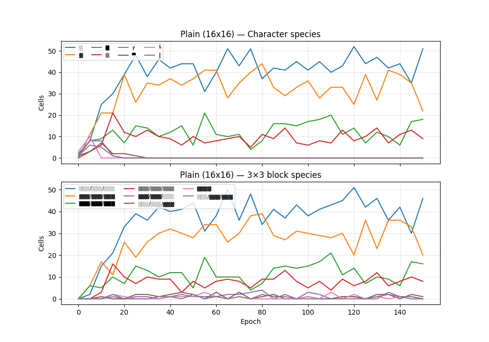
“Make it pretty” (16×16, epoch 150)
3×3 block (57 distinct): 7/100 ◆◇◆/◇◆◇/◆◇◆, 7/100 ◇◆◇/◆◇◆/◇◆◇, 5/100 ☆★☆/★☆★/☆★☆
Character (23 distinct): ◆(19), ●(10), ◇(10), ☆(7)
Sample of 5 cells (out of 100):
▲▼▲▼▲▼▲▼▲▼▲▼▲▼▲▼
▼▲▼▲▼▲▼▲▼▲▼▲▼▲▼▲
···
◇◆
◆◇◆◇◆◇◆◇◆◇◆◇◆◇◆◇◆◇◆◇◆◇◆◇◆◇◆
···
▪▫▪▫▪▫▪▫▪▫▪▫▪▫▪▫▪▫▪▫▪▫▪▫▪▫▪▫▪▫▪▫
▫▪▫▪▫▪▫▪▫▪▫▪▫▪▫▪▫▪▫▪▫▪▫▪▫▪▫▪▫▪▫▪
▪▫▪▫▪▫▪▫▪▫▪▫▪▫
···
◇◆◇◆◇◆◇◆◇◆◇◆◇◆◇◆
◉◈◉◈◉◈◉◈◉◈◉◈◉◈◉◈
···
☆★☆★☆★☆★☆
★☆★☆★☆★
◆◇◆◇◆◇◆◇◆◇◆◇◆◇◆◇
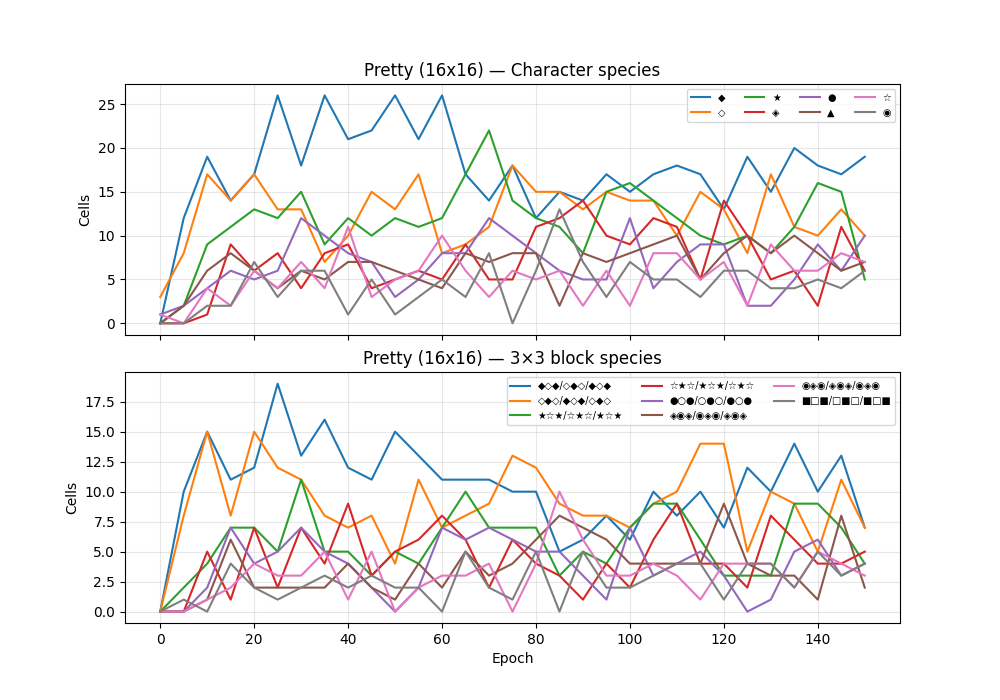
“Keep it interesting” (16×16, epoch 150)
3×3 block (55 distinct): 8/100 ▓░▓/▓░▓/▓░▓, 7/100 ░░░/░░░/░░░, 7/100 ◇◆◇/◆◇◆/◇◆◇
Character (17 distinct): ▓(32), ░(22), ◇(9), ═(8)
Sample of 5 cells (out of 100):
▲░░░░░░░░░░░░░░▲
▲▲▲▲▲▲▲▲▲▲▲▲▲▲▲▲
···
●○●○●○●○●○●○●○●○
○●○●○●○●○●○●○●○●
●○●○●○●○●○●○●○●○
···
▒▒▒▒▒▒▒▒▒▒▒▒▒▒▒▒
▒░░░░░░░░░░░░░░▒
▒░▓▓▓▓▓▓▓▓▓▓▓▓░▒
···
▲▼▲▼▲▼▲▼▲▼▲▼▲▼▲▼
▼▲▼▲▼▲▼▲▼▲▼▲▼▲▼▲
▲▼▲▼▲▼▲▼▲▼▲▼▲▼▲▼
···
▒░▓▓▓▓▓▓▓▓▓▓▓▓░▒
▒░▓▓▓▓▓▓▓▓▓▓▓▓░▒
▒░▓▓▓▓▓▓▓▓▓▓▓▓░▒
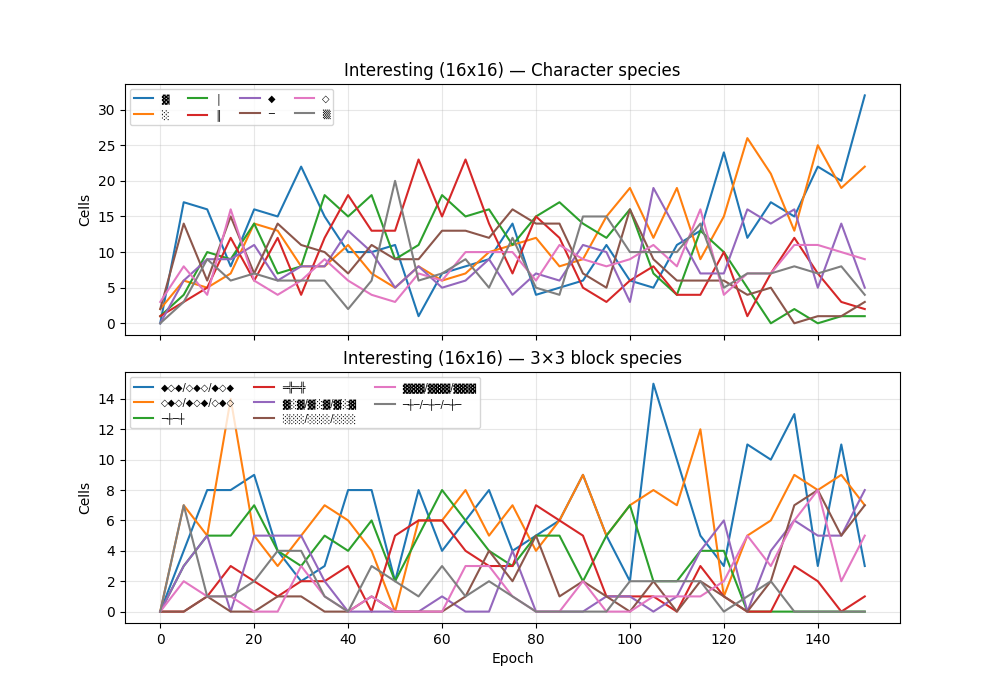
“Imbue your personality” (32×32, epoch 180)
3×3 block (6 distinct): 75/100 ░░░/░░░/░░░, 11/100 ███/███/███, 11/100 ▓▓▓/▓▓▓/▓▓▓
Character (4 distinct): ░(76), ▓(12), █(11), ▒(1)
Sample of 5 cells (out of 100):
██░░░░░░░░░░░░░░░░░░░░░░░░░░░░░░██░░░░░░░░░░░░░░░░░░░░░░░░░░░░░░██
██░░░░░░░░░░░░░░░░░░░░░░░░░░░░░░██░░░░░░░░░░░░░░░░░░░░░░░░░░░░░░██
██░░░░░░░░░░░░░░░░░░░░░░░░░░░░░░██░░░░░░░░░░░░░░░░░░░░░░░░░░░░░░██
···
░░░░░░░░░░░░░░░░░░░░░░░░░░░░░░░░░░░░░░░░░░░░░░░░░░░░░░░░░░░░░░░░░░░░░░
░░░░░░░░░░░░░░░░░░░░░░░░░░░░░░░░░░░░░░░░░░░░░░░░░░░░░░░░░░░░░░░░░░░░░░
░░░░░░░░░░░░░░░░░░░░░░░░░░░░░░░░░░░░░░░░░░░░░░░░░░░░░░░░░░░░░░░░░░░░░░
···
▓▓▓▓▓▓▓▓▓▓▓▓▓▓▓▓▓▓▓▓▓▓▓▓▓▓▓▓▓▓▓▓▓▓▓▓▓▓▓▓▓▓▓▓▓▓▓▓▓▓▓▓▓▓▓▓▓▓▓▓▓▓▓▓▓▓▓▓▓▓
▓▓▓▓▓▓▓▓▓▓▓▓▓▓▓▓▓▓▓▓▓▓▓▓▓▓▓▓▓▓▓▓▓▓▓▓▓▓▓▓▓▓▓▓▓▓▓▓▓▓▓▓▓▓▓▓▓▓▓▓▓▓▓▓▓▓▓▓▓▓
▓▓▓▓▓▓▓▓▓▓▓▓▓▓▓▓▓▓▓▓▓▓▓▓▓▓▓▓▓▓▓▓▓▓▓▓▓▓▓▓▓▓▓▓▓▓▓▓▓▓▓▓▓▓▓▓▓▓▓▓▓▓▓▓▓▓▓▓▓▓
···
██░░░░░░░░░░░░░░░░░░░░░░░░░░░░░░██░░░░░░░░░░░░░░░░░░░░░░░░░░░░░░██
██░░░░░░░░░░░░░░░░░░░░░░░░░░░░░░██░░░░░░░░░░░░░░░░░░░░░░░░░░░░░░██
██░░░░░░░░░░░░░░░░░░░░░░░░░░░░░░██░░░░░░░░░░░░░░░░░░░░░░░░░░░░░░██
···
██░░░░░░░░░░░░░░░░░░░░░░░░░░░░░░██░░░░░░░░░░░░░░░░░░░░░░░░░░░░░░██
██░░░░░░░░░░░░░░░░░░░░░░░░░░░░░░██░░░░░░░░░░░░░░░░░░░░░░░░░░░░░░██
██░░░░░░░░░░░░░░░░░░░░░░░░░░░░░░██░░░░░░░░░░░░░░░░░░░░░░░░░░░░░░██
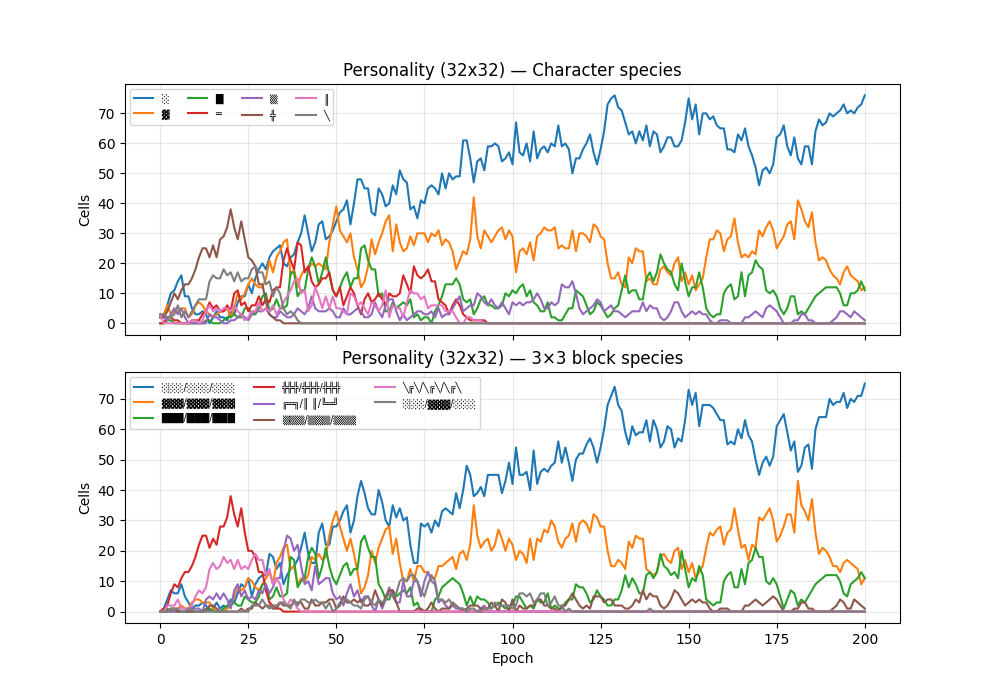
Wikipedia (1D, k=32, epoch 200)
4-gram (1 distinct): 100/100 3-3-
Character (1 distinct): 3(100)
Sample of 5 cells (out of 100):
3-3-3-3-3-3-3-3-3-3-3-3-3-3-3-3-
···
3-3-3-3-3-3-3-3-3-3-3-3-3-3-3-3-
···
3-3-3-3-3-3-3-3-3-3-3-3-3-3-3-3-
···
3-3-3-3-3-3-3-3-3-3-3-3-3-3-3-3-
···
3-3-3-3-3-3-3-3-3-3-3-3-3-3-3-3-
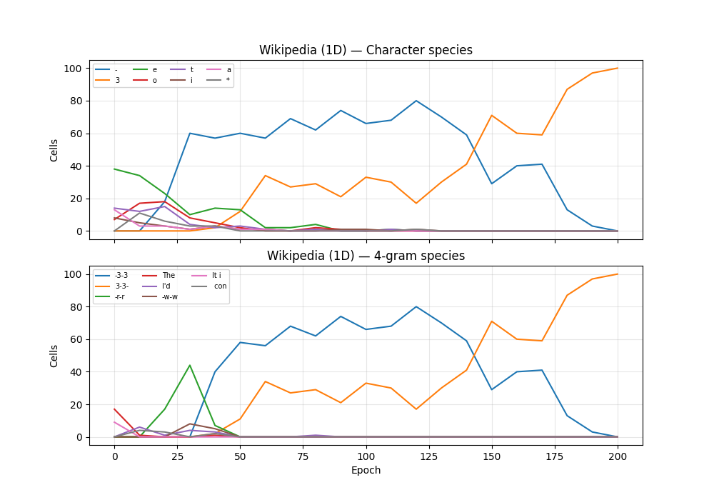
ASCII art (1D, k=64, epoch 150)
4-gram (3 distinct): 37/100 ╝╚╔╝, 32/100 ╚╔╝╚, 31/100 ╔╝╚╔
Character (3 distinct): ╝(37), ╚(32), ╔(31)
Sample of 5 cells (out of 100):
╚╔╝╚╔╝╚╔╝╚╔╝╚╔╝╚╔╝╚╔╝╚╔╝╚╔╝╚╔╝╚╔╝╚╔╝╚╔╝╚╔╝╚╔╝╚╔╝╚╔╝╚╔╝╚╔╝╚╔╝╚╔╝╚
···
╝╚╔╝╚╔╝╚╔╝╚╔╝╚╔╝╚╔╝╚╔╝╚╔╝╚╔╝╚╔╝╚╔╝╚╔╝╚╔╝╚╔╝╚╔╝╚╔╝╚╔╝╚╔╝╚╔╝╚╔╝╚╔╝
···
╔╝╚╔╝╚╔╝╚╔╝╚╔╝╚╔╝╚╔╝╚╔╝╚╔╝╚╔╝╚╔╝╚╔╝╚╔╝╚╔╝╚╔╝╚╔╝╚╔╝╚╔╝╚╔╝╚╔╝╚╔╝╚╔
···
╔╝╚╔╝╚╔╝╚╔╝╚╔╝╚╔╝╚╔╝╚╔╝╚╔╝╚╔╝╚╔╝╚╔╝╚╔╝╚╔╝╚╔╝╚╔╝╚╔╝╚╔╝╚╔╝╚╔╝╚╔╝╚╔
···
╝╚╔╝╚╔╝╚╔╝╚╔╝╚╔╝╚╔╝╚╔╝╚╔╝╚╔╝╚╔╝╚╔╝╚╔╝╚╔╝╚╔╝╚╔╝╚╔╝╚╔╝╚╔╝╚╔╝╚╔╝╚╔╝
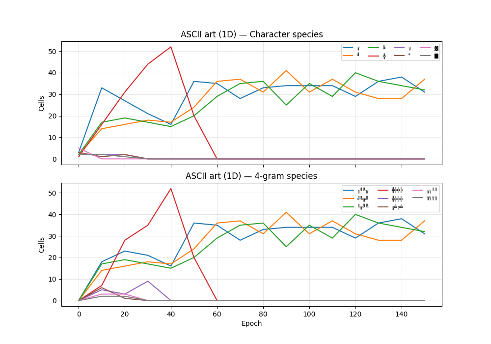
Metrics
Unique strings
How many of the 100 cells are distinct each epoch.
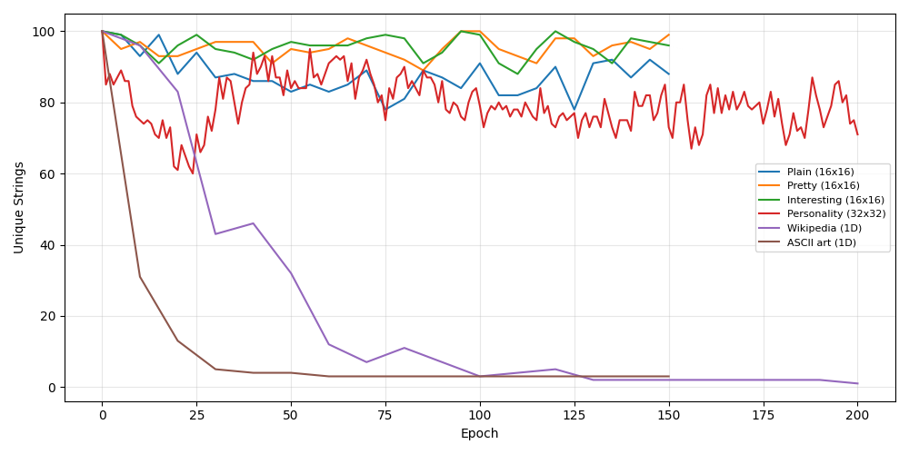
Shannon entropy
Byte-level entropy of the concatenated soup. Drops as the soup converges to fewer distinct characters.
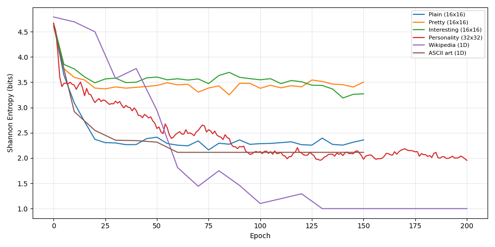
Compression ratio
compressed_size / raw_size (zlib). Drops toward 0 as the soup becomes highly regular.
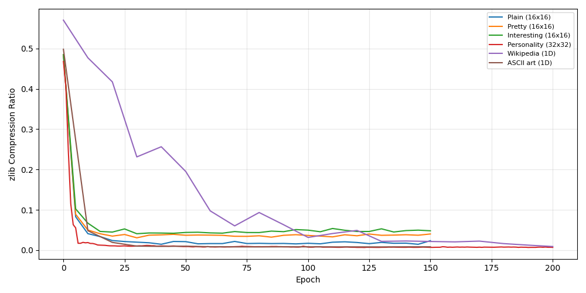
Semantics Aware metrics
We use sentence embeddings to get compression metrics that are more sensitive to semantics.
Effective rank
Participation ratio of SVD singular values of the centered embedding matrix (all-MiniLM-L6-v2). High when the population spans many semantic directions; low when it collapses to a few clusters.
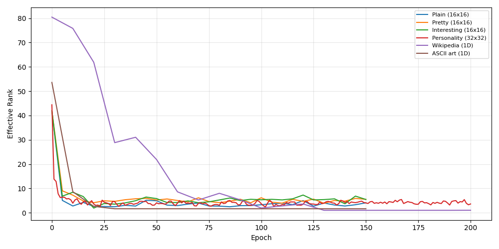
Mean cosine similarity
Average pairwise cosine similarity across all 100 embeddings. Rises as the population converges.
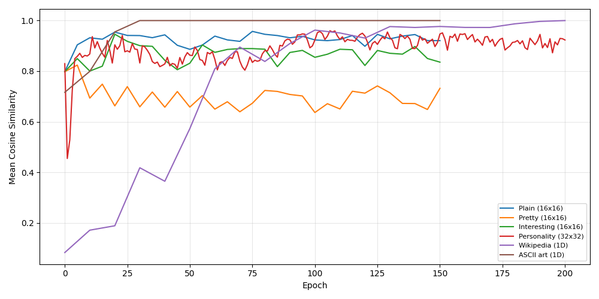
Differential entropy
Differential entropy of a Gaussian fit to the embedding distribution: 0.5 * (d * ln(2πe) + ln det Σ) where Σ is the sample covariance and d is the number of non-degenerate eigenvalues (eigenvalues > 1e-12 are kept, near-zero ones dropped).
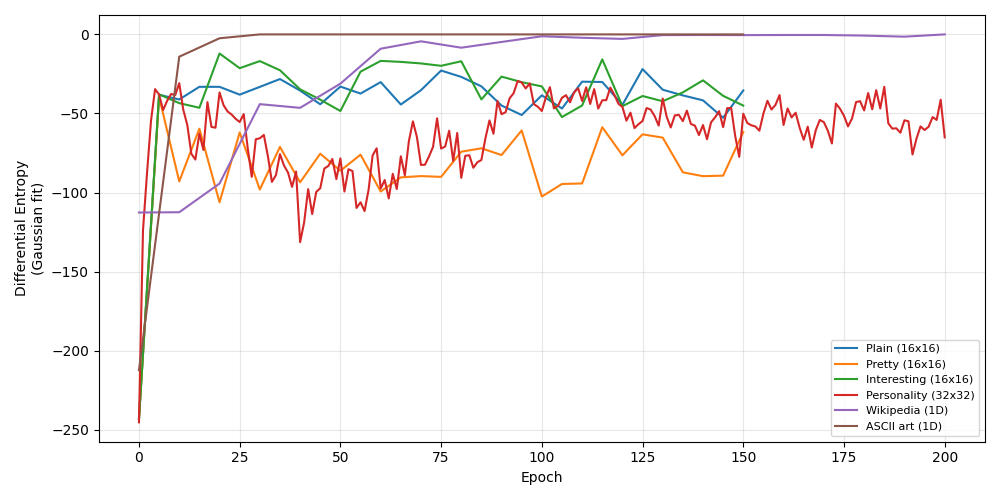